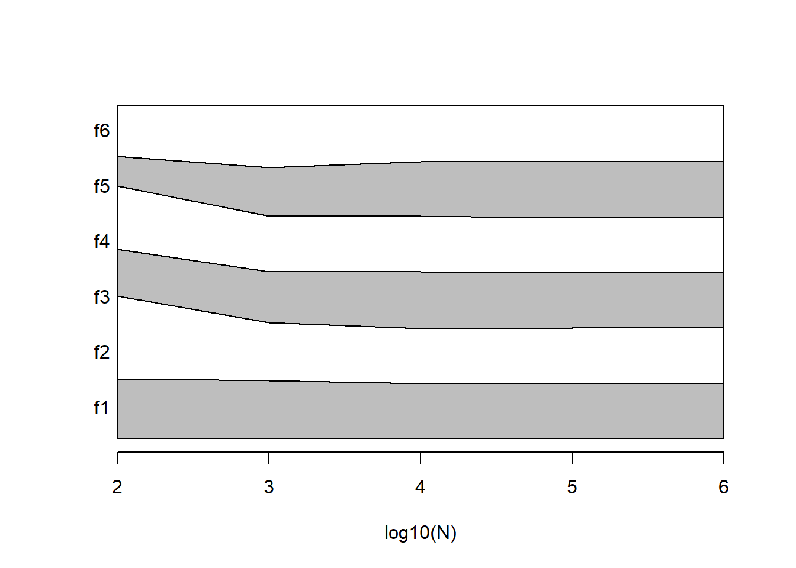
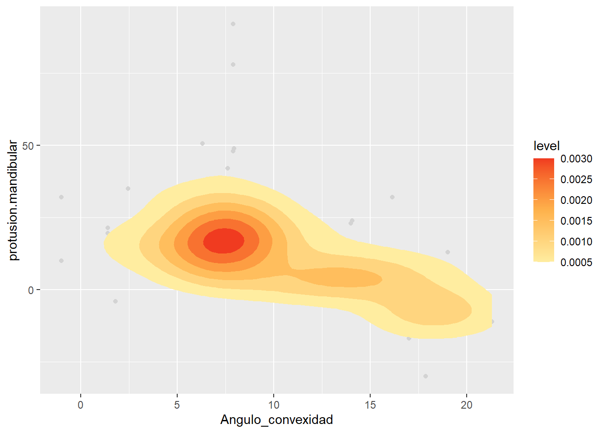
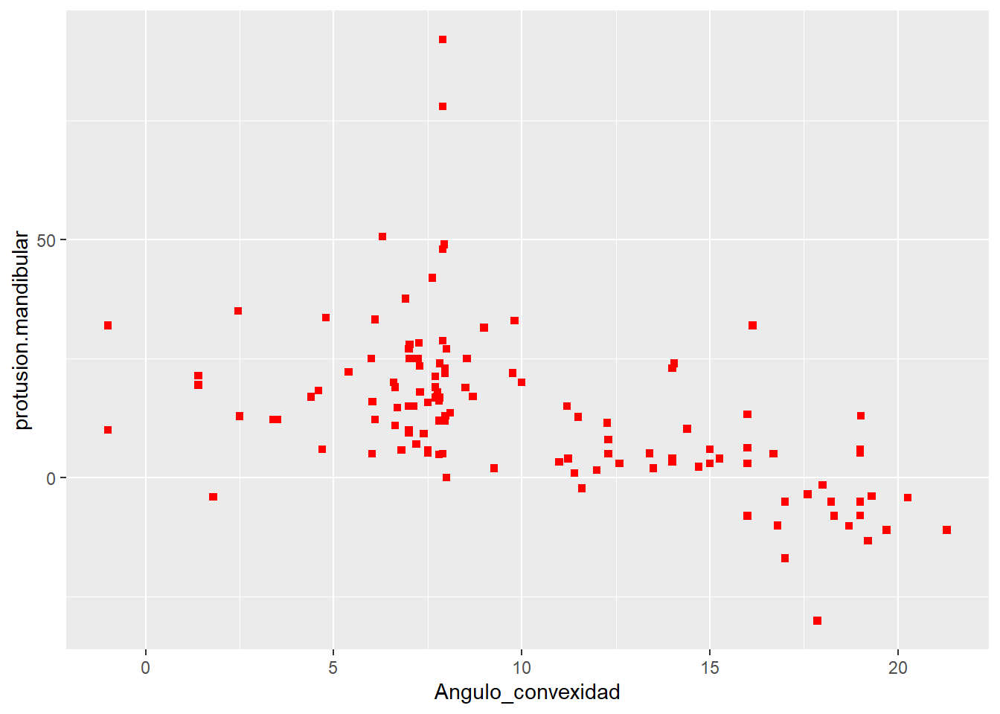

Chapter 3 Probabilidad
3.2 Experimentos aleatorios
Observación
- y observación es la adquisición de un número o una característica de un experimento
Salir
- Un resultado es una posible observación que es el resultado de un experimento.
Experimento aleatorio
- Un experimento que da resultados diferentes cuando se repite de la misma manera.
3.3 Probabilidad
La probabilidad de un resultado es una medida de cuán seguros estamos de observar ese resultado al realizar un experimento aleatorio.
0: Estamos seguros de que la observación no ocurrirá.
1: Estamos seguros de que la observación sucederá.
3.4 Ejemplo
- Considere las siguientes observaciones de un experimento aleatorio:
1 5 1 2 2 1 2 2
- ¿Qué tan seguro estamos de obtener \(2\) en la siguiente observación?
3.5 Ejemplo
La tabla de frecuencias es
## outcome ni fi
## 1 1 3 0.375
## 2 2 4 0.500
## 3 5 1 0.125La frecuencia relativa \(f_i\)
- es un número entre \(0\) y \(1\).
- mide la proporción del total de observaciones que observamos un resultado particular.
- parece una medida de probabilidad razonable.
Como \(f_2=0.5\) entonces estaríamos \(50º%\) seguros de obtener \(2\) en la siguiente repetición del experimento.
3.6 Frecuencia relativa
¿\(f_i\) es una buena medida de certeza?
Digamos que repetimos el experimento 12 veces más:
1 5 1 2 2 1 2 2 3 1 1 3 3 1 6 3 5 6 4 4
La tabla de frecuencias es ahora
## outcome ni fi
## 1 1 6 0.3
## 2 2 4 0.2
## 3 3 4 0.2
## 4 4 2 0.1
## 5 5 2 0.1
## 6 6 2 0.1Aparecieron nuevos resultados y \(f_2\) ahora es \(0.2\), ahora estamos un \(20\%\) seguros de obtener \(2\) en el próximo experimento… la probabilidad no debería depender de \(N\)
3.7 En el infinito
Digamos que repetimos el experimento 1000 veces:
## outcome ni fi
## 1 1 169 0.169
## 2 2 169 0.169
## 3 3 168 0.168
## 4 4 159 0.159
## 5 5 164 0.164
## 6 6 171 0.171Encontramos que \(f_i\) está convergiendo a un valor constante
\[lim_{N\rightarrow \infty} f_i = P_i\]

3.8 Probabilidad frecuentista
Llamamos Probabilidad \(P_i\) al límite cuando \(N \rightarrow \infty\) de la frecuencia relativa de observar el resultado \(i\) en un experimento aleatorio.
Defendida por Venn (1876)
La interpretación frecuentista de probabilidades se deriva de datos/experiencia (empírica).
- No observamos \(P_i\), observamos \(f_i\)
- Cuando estimamos \(P_i\) con \(f_i\) (normalmente cuando \(N\) es grande), escribimos: \[\hat{P_i}=f_i\]
3.9 Probabilidad clásica
Cada vez que un experimento aleatorio tiene \(M\) resultados posibles que son todos igualmente probables, la probabilidad de cada resultado es \(\frac{1}{M}\).
Defendida por Laplace (1814).
Dado que cada resultado es igualmente probable, declaramos una completa ignorancia y lo mejor que podemos hacer es distribuir equitativamente la misma probabilidad para cada resultado.
¿Y si te dijera que nuestro experimento fue tirar un dado? entonces
\(P_2=1/6=0.166666\).
\[P_i=lim_{N\rightarrow \infty} \frac{n_i}{N}=\frac{1}{M}\]

3.11 Probabilidad
La probabilidad es un número entre \(0\) y \(1\) que se asigna a cada miembro \(E\) de una colección de eventos de un espacio muestral (\(S\)) de un experimento aleatorio.
\[P(E) \in (0,1)\]
donde \(E \in S\)
3.12 Espacio muestral
Empezamos razonando cuáles son todos los valores posibles (resultados) que podría dar un experimento aleatorio.
Tenga en cuenta que no tenemos que observarlos en un experimento en particular: estamos usando razón/lógica y no observación.
Definición:
El conjunto de todos los resultados posibles de un experimento aleatorio se denomina espacio muestral del experimento
El espacio muestral se denota como \(S\).
3.13 Ejemplos de espacios muestrales
- temperatura 35 y 42 grados centígrados
- niveles de azúcar: 70-80mg/dL
- el tamaño de un tornillo de una línea de producción: 70 mm-72 mm
- número de correos electrónicos recibidos en una hora: 0-100
- un lanzamiento de dados: 1, 2, 3, 4, 5, 6
3.14 Espacios muestrales discretos y continuos
Un espacio muestral es discreto si consiste en un conjunto de resultados finito o infinito numerable.
Un espacio muestral es continuo si contiene un intervalo (ya sea de longitud finita o infinita) de numeros reales.
3.15 Evento
Definición:
Un evento es un subconjunto del espacio muestral de un experimento aleatorio. Es una colección de resultados.
Ejemplos de eventos:
- El evento de una temperatura saludable: temperatura 37-38 grados centígrados
- El evento de producir un tornillo con un tamaño: de 71,5 mm
- El evento de recibir más de 4 correos electrónicos en una hora.
- El evento de obtener un número menor de 3 en el lanzamiento de un dado
Un evento se refiere a un posible conjunto de resultados.
3.16 Operaciones de eventos
Para dos eventos \(A\) y \(B\), podemos construir los siguientes eventos derivados:
- Complemento \(A'\): el evento de no \(A\)
- Unión \(A \cup B\): el evento de \(A\) o \(B\)
- Intersección \(A \cap B\): el evento de \(A\) y \(B\)
3.17 Ejemplo de operaciones de eventos
Tomar
- Evento \(A:\{1,2,3\}\) un número menor o igual a tres en el lanzamiento de un dado
- Evento \(B:\{2,4,6\}\) un número par en el lanzamiento de un dado
Nuevos eventos:
- No menos de tres: \(A':\{4,5,6\}\)
- Menor o igual a tres o par: \(A \cup B: \{1,2,3,4,6\}\)
- Menor o igual a tres y par \(A \cap B: \{2\}\)
3.18 Resultados
Los resultados son eventos que son mutuamente excluyentes
Definición:
Dos eventos denotados como \(E_1\) y \(E_2\), tales que
\[E_1\cap E_2=\emptyset\] No pueden ocurrir al mismo tiempo.
Ejemplo:
El resultado de obtener \(1\) y el resultado de obtener \(5\) en el lanzamiento de un dado son mutuamente excluyentes:
El evento de obtener \(1\) y \(5\) está vacío:\[\{1\}\cap \{5\}=\emptyset\]
3.19 Definición de probabilidad
Una probabilidad es un número que se asigna a cada evento posible (\(E\)) de un espacio muestral (\(S\)) de un experimento aleatorio que cumple las siguientes propiedades:
- \(P(S)=1\)
- \(0 \leq P(E) \leq 1\)
- cuando \(E_1\cap E_2=\emptyset\) \[P(E_1\cup E_2) = P(E_1) + P(E_2)\]
Propuesto por Kolmogorov (1933)
3.20 Propiedades de probabilidad
Kolmogorov dice que podemos construir una tabla de probabilidad (al igual que la tabla de frecuencia relativa)
| resultado | Probabilidad |
|---|---|
| \(1\) | 1/6 |
| \(2\) | 1/6 |
| \(3\) | 1/6 |
| \(4\) | 1/6 |
| \(5\) | 1/6 |
| \(6\) | 1/6 |
| \(P(1\cup 2\cup ...\cup 6)\) | 1 |
Como \(\{1,2,3,4,5,6\}\) son mutuamente excluyentes, entonces
\[P(S)=P(1\cup 2\cup ...\cup 6) = P(1)+P(2)+ ...+P(n)=1\]
3.21 Regla de adición
Cuando \(A\) y \(B\) no son mutuamente excluyentes, entonces:
\[P(A\cup B)=P(A) + P(B) - P(A\cap B)\]
Donde \(P(A)\) y \(P(B)\) se denominan probabilidades marginales
3.22 Ejemplo de regla de adición
Tomar
- Evento \(A:\{1,2,3\}\) un número menor o igual a tres en el lanzamiento de un dado
- Evento \(B:\{2,4,6\}\) un número par en el lanzamiento de un dado
después:
- \(P(A): P(1) + P(2) + P(3)=3/6\)
- \(P(G): P(2) + P(4) + P(6)=3/6\)
- \(P(A \cap B): P(2) = 1/6\)
\(P(A\cup B)=P(A) + P(B) - P(A\cap B)=3/6+3/6-1/6=5/6\)
Nota: \(P(2)\) aparece en \(P(A)\) y \(P(B)\) por eso lo restamos con la intersección
3.23 Diagrama de Venn
Tenga en cuenta que siempre se puede descomponer el espacio muestral en conjuntos mutuamente excluyentes que involucran las intersecciones:
\(S=\{A\cap B, A \cap B', A'\cap B, A'\cap B'\}\)

Marginales:
- \(P(A)=P(A\cap B') + P(A \cap B)=2/6+1/6=3/6\)
- \(P(B)=P(A'\cap B) +P(A \cap B)=2/6+1/6=3/6\)
3.24 Tabla de probabilidades
Veamos la tabla de probabilidades.
| resultado | Probabilidad |
|---|---|
| \(A\cap B\) | \(P(A\cap B)\) |
| \(A\cap B'\) | \(P(A\cap B')\) |
| \(A'\cap B\) | \(P(A'\cap B)\) |
| \(A'\cap B'\) | \(P(A'\cap B')\) |
| suma | \(1\) |
3.25 Ejemplo de tabla de probabilidades
También escribimos \(A \cap B\) como \((A,B)\) y lo llamamos la probabilidad conjunta de \(A\) y \(B\)
En nuestro ejemplo:
| resultado | Probabilidad |
|---|---|
| \((A,B)\) | \(P(A, B)=1/6\) |
| \((A,B')\) | \(P(A,B')=2/6\) |
| \((A', B)\) | \(P(A', B)=2/6\) |
| \((A', B')\) | \(P(A', B')=1/6\) |
| suma | \(1\) |
Nota: cada resultado tiene \(dos\) valores (uno para la característica del tipo \(A\) y otro para el tipo \(B\))
3.26 Tabla de contingencia
Podemos organizar la probabilidad de resultados conjuntos en una tabla de contingencia
| \(B\) | \(B'\) | suma | |
|---|---|---|---|
| \(A\) | \(P(A, B )\) | \(P(A, B' )\) | \(P(A)\) |
| \(A'\) | \(P(A', B )\) | \(P(A', B' )\) | \(P(A')\) |
| suma | \(P(B)\) | \(P(B')\) | 1 |
marginales:
- \(P(A)=P(A, B') + P(A, B)\)
- \(P(B)=P(A', B) +P(A, B)\)
3.27 Ejemplo de tabla de contingencia
- Evento \(A:\{1,2,3\}\) un número menor o igual a tres en el lanzamiento de un dado
- Evento \(B:\{2,4,6\}\) un número par en el lanzamiento de un dado
| \(B\) | \(B'\) | suma | |
|---|---|---|---|
| \(A\) | \(1/6\) | \(2/6\) | \(3/6\) |
| \(A'\) | \(2/6\) | \(1/6\) | \(3/6\) |
| suma | \(3/6\) | \(3/6\) | 1 |
Tres formas de la regla de la suma:
\(P(A\cup B)\)\[=P(A) + P(B) - P(A\cap B)\] \[=P(A \cap B)+P(A\cap B')+P(A'\cap B)\] \[=1-P(A'\cap B')\]
3.28 Estudio de misofonía
En el estudio de misofonía, se evaluó a los pacientes según la gravedad de su misofonía y si estaban deprimidos.
El resultado de un experimento aleatorio es medir la gravedad de la misofonía y el estado de depresión de un paciente. La repetición del experimento aleatorio consistía en realizar las mismas dos mediciones en otro paciente.
## Misofonia.dic depresion.dic
## 1 4 1
## 2 2 0
## 3 0 0
## 4 3 0
## 5 0 0
## 6 0 0
## 7 2 0
## 8 3 0
## 9 0 1
## 10 3 0
## 11 0 0
## 12 2 0
## 13 2 1
## 14 0 0
## 15 2 0
## 16 0 0
## 17 0 0
## 18 3 0
## 19 3 0
## 20 0 0
## 21 3 0
## 22 3 0
## 23 2 0
## 24 0 0
## 25 0 0
## 26 0 0
## 27 4 1
## 28 2 0
## 29 2 0
## 30 0 0
## 31 2 0
## 32 0 0
## 33 0 0
## 34 0 0
## 35 3 0
## 36 0 0
## 37 2 0
## 38 3 1
## 39 2 0
## 40 2 0
## 41 0 0
## 42 2 0
## 43 3 0
## 44 0 0
## 45 0 0
## 46 2 0
## 47 2 0
## 48 3 0
## 49 3 0
## 50 0 0
## 51 0 0
## 52 4 1
## 53 3 0
## 54 3 1
## 55 2 1
## 56 0 1
## 57 2 0
## 58 0 0
## 59 0 0
## 60 0 0
## 61 2 0
## 62 2 0
## 63 0 0
## 64 0 0
## 65 2 0
## 66 3 1
## 67 0 0
## 68 1 0
## 69 3 0
## 70 2 0
## 71 4 1
## 72 3 0
## 73 2 1
## 74 3 0
## 75 0 1
## 76 2 0
## 77 3 0
## 78 2 0
## 79 4 1
## 80 1 0
## 81 2 0
## 82 0 0
## 83 2 0
## 84 0 0
## 85 2 0
## 86 0 1
## 87 2 0
## 88 2 0
## 89 4 1
## 90 3 0
## 91 0 1
## 92 3 0
## 93 0 0
## 94 0 0
## 95 0 0
## 96 2 0
## 97 2 0
## 98 1 0
## 99 3 0
## 100 0 0
## 101 0 0
## 102 3 1
## 103 2 0
## 104 1 0
## 105 3 0
## 106 0 0
## 107 4 1
## 108 4 1
## 109 2 0
## 110 3 0
## 111 3 0
## 112 3 1
## 113 0 0
## 114 3 0
## 115 2 0
## 116 1 0
## 117 2 0
## 118 3 1
## 119 3 0
## 120 4 1
## 121 2 0
## 122 3 0
## 123 2 03.29 Tabla de contingencia para frecuencias
- Para el número de observaciones \(n_{i,j}\) de cada resultado \((x_i, y_i)\), misofonía: \(x\in \{0,1,2,3,4\}\) y depresión \(y\ en \{0,1\}\) (no:\(0\), sí:\(1\))
##
## Depression:0 Depression:1
## Misophonia:4 0 9
## Misophonia:3 25 6
## Misophonia:2 34 3
## Misophonia:1 5 0
## Misophonia:0 36 5- para las frecuencias relativas \(f_{i,j}\)
##
## Depression:0 Depression:1
## Misophonia:4 0.00000000 0.07317073
## Misophonia:3 0.20325203 0.04878049
## Misophonia:2 0.27642276 0.02439024
## Misophonia:1 0.04065041 0.00000000
## Misophonia:0 0.29268293 0.04065041
3.31 Variables continuas
En el estudio de misofonía también se midió la protrusión mandibular como posible factor cefalométrico de la enfermedad.
## Angulo_convexidad protusion.mandibular
## 1 7.97 13.00
## 2 18.23 -5.00
## 3 12.27 11.50
## 4 7.81 16.80
## 5 9.81 33.00
## 6 13.50 2.00
## 7 19.30 -3.90
## 8 7.70 16.80
## 9 12.30 8.00
## 10 7.90 28.80
## 11 12.60 3.00
## 12 19.00 -7.90
## 13 7.27 28.30
## 14 14.00 4.00
## 15 5.40 22.20
## 16 8.00 0.00
## 17 11.20 15.00
## 18 7.75 17.00
## 19 7.94 49.00
## 20 16.69 5.00
## 21 7.62 42.00
## 22 7.02 28.00
## 23 7.00 9.40
## 24 19.20 -13.20
## 25 7.96 23.00
## 26 14.70 2.30
## 27 7.24 25.00
## 28 7.80 4.90
## 29 7.90 92.00
## 30 4.70 6.00
## 31 4.40 17.00
## 32 14.00 3.30
## 33 14.40 10.30
## 34 16.00 6.30
## 35 1.40 19.50
## 36 9.76 22.00
## 37 7.90 5.00
## 38 7.90 78.00
## 39 7.40 9.30
## 40 6.30 50.60
## 41 7.76 18.00
## 42 7.30 18.00
## 43 7.00 10.00
## 44 11.23 4.00
## 45 16.00 13.30
## 46 7.90 48.00
## 47 7.29 23.50
## 48 6.91 37.60
## 49 7.10 15.00
## 50 13.40 5.10
## 51 11.60 -2.20
## 52 -1.00 32.00
## 53 6.00 25.00
## 54 7.82 24.00
## 55 4.80 33.60
## 56 11.00 3.30
## 57 9.00 31.50
## 58 11.50 12.80
## 59 16.00 3.00
## 60 15.00 6.00
## 61 1.40 21.40
## 62 16.80 -10.00
## 63 7.70 19.00
## 64 16.14 32.00
## 65 7.12 15.00
## 66 -1.00 10.00
## 67 17.00 -16.90
## 68 9.26 2.00
## 69 18.70 -10.10
## 70 3.40 12.20
## 71 21.30 -11.00
## 72 7.50 5.20
## 73 6.03 16.00
## 74 7.50 5.80
## 75 19.00 5.20
## 76 19.01 13.00
## 77 8.10 13.60
## 78 7.80 16.10
## 79 6.10 33.20
## 80 15.26 4.00
## 81 7.95 12.00
## 82 18.00 -1.50
## 83 4.60 18.30
## 84 15.00 3.00
## 85 7.50 15.80
## 86 8.00 27.10
## 87 16.80 -10.00
## 88 8.54 25.00
## 89 7.00 27.10
## 90 18.30 -8.00
## 91 7.80 12.00
## 92 16.00 -8.00
## 93 14.00 23.00
## 94 12.30 5.00
## 95 11.40 1.00
## 96 8.50 18.90
## 97 7.00 15.00
## 98 7.96 22.00
## 99 17.60 -3.50
## 100 10.00 20.00
## 101 3.50 12.20
## 102 6.70 14.70
## 103 17.00 -5.00
## 104 20.26 -4.15
## 105 6.64 11.00
## 106 1.80 -4.00
## 107 7.02 25.00
## 108 2.46 35.00
## 109 19.00 -5.00
## 110 17.86 -30.00
## 111 6.10 12.20
## 112 6.64 19.00
## 113 12.00 1.60
## 114 6.60 20.00
## 115 8.70 17.10
## 116 14.05 24.00
## 117 7.20 7.10
## 118 19.70 -11.00
## 119 7.70 21.30
## 120 6.02 5.00
## 121 2.50 12.90
## 122 19.00 5.90
## 123 6.80 5.803.32 Variables continuas
En el estudio de misofonía también se midió la protrusión mandibular como posible factor cefalométrico de la enfermedad.

3.33 Gráfico de dispersión
El histograma depende del tamaño del contenedor (píxel).
Si el píxel es lo suficientemente pequeño como para contener una sola observación, el mapa de calor da como resultado un diagrama de dispersión
El diagrama de dispersión es la ilustración de una “tabla de contingencia” para variables continuas cuando el contenedor (píxel) es lo suficientemente pequeño como para contener una sola observación (que consta de un par de valores).
